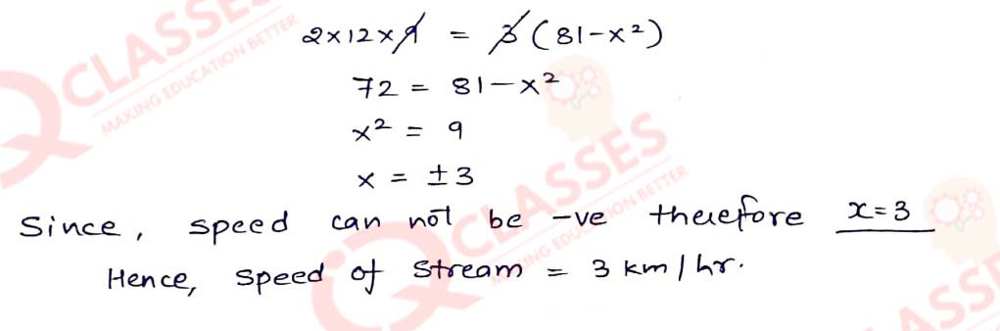

Q1
Five times a certain whole number is equal to three less than twice the square of the number. Find
the number.
Solution

Q2
For the same amount of work, A takes 6 hours less than B. If together they complete the work in 13
hours 20 minutes; find how much time will B alone take to complete the work ?
Solution

Q3
Divide 15 into two parts such that the sum of their reciprocals is 3/10
Solution
Q4
A can do a piece of work in 'x' days and B can do the same work in (x + 16) days. If both working
together can do it in 15 days; calculate 'x'
Solution

Q5
One pipe can fill a cistern in 3 hours less than the other. The two pipes together can fill the
cistern in 6 hours 40 minutes. Find the time that each pipe will take to fill the cistern.
Solution
Q6
The hypotenuse of a right-angled triangle exceeds one side by 1 cm and the other side by 18 cm; find
the lengths of the sides of the triangle.
Solution
Q7
The dimensions of a rectangular field are 50 m by 40 m. A flower bed is prepared inside this field
leaving a gravel path of uniform width all around the flower bed. The total cost of laying the
flower bed and gravelling the path at Rs30 and Rs20 per square metre, respectively, is Rs52,000.
Find
the width of the gravel path.
Solution
Q8
By increasing the speed of a car by 10 km/hr, the time of journey for a distance of 72 km is reduced
by 36 minutes. Find the original speed of the car.
Solution
Q9
The area of a big rectangular room is 300 m2. If the length were decreased by 5 m and the
breadth
increased by 5 m; the area would be unaltered. Find the length of the room.
Solution
Q10
Car A travels x km for every litre of petrol, while car B travels (x + 5) km for every litre of
petrol.
- Write down the number of litres of petrol used by car A and car B in covering a distance of
400 km.
- If car A uses 4 litres of petrol more than car B in covering the 400 km, write down an
equation in x and solve it to determine the number of litres of petrol used by car B for the
journey.
Solution
Q11
By selling an article for Rs24, a trader loses as much percent as the cost price of the article.
Calculate the cost price.
Solution
Q12
The sum S of first n natural numbers is given by the relation : S = 1/2 n(n + 1). Find n, if the sum
is 276.
Solution
Q13
A two-digit number is such that the product of its digits is 6. When 9 is added to this number; the
digits interchange their places. Find the number.
Solution
Q14
Five years ago, a woman's age was the square of her son's age. Ten years hence her age will be twice
that of her son's age. Find:
- the age of the son five years ago.
- the present age of the woman.
Solution
Q15
A motor-boat, whose speed is 9 km/h in still water, goes 12 km downstream and comes back in a total
time of 3 hours. Find the speed of the stream.
Solution

Q16
Some students planned a picnic. The budget for the food was Rs480. As eight of them failed to join
the party, the cost of the food for each member increased by Rs10. Find, how many students went for
the picnic ?
Solution
Q17
Rs250 is divided equally among a certain number of children. If there were 25 children more, each
would have received 50 paise less. Find the number of children.
Solution
Q18
The total cost price of a certain number of identical articles is Rs4,800. By selling the articles
at
Rs100 each, a profit equal to the cost price of 15 articles is made. Find the number of articles
bought.
Solution
Q19
The speed of a boat in still water is 15 km/hr. It can go 30 km upstream and return downstream to
the original point in 4 hours 30 minutes. Find the speed of the stream.
Solution
Q20
A bus covers a distance of 240 km at a uniform speed. Due to heavy rain its speed gets reduced by 10
km/h and as such it takes two hrs longer to cover the total distance. Assuming the uniform speed to
be 'x' km/h, form an equation and solve it to evaluate 'x'.
Solution
Q21
The sum of the ages of Vivek and his younger brother Amit is 47 years. The product of their ages in
years is 550. Find their ages.
Solution
Q22
One year ago, a man was 8 times as old as his son. Now his age is equal to the square of his son's
age. Find their present ages.
Solution